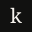

Wordmark — variantes
El wordmark es tipográfico: Playfair Display 500 · 24px (--text-xl) · letter-spacing -0.03em · lowercase. Las clases .wordmark y .wordmark.light controlan el color en contexto.
Assets SVG — fallback estático
Usados en favicons, OG images y emails — no en el HTML del sitio. Playfair Display embedded vía font-family con fallback Georgia.
Favicon

32px SVG
180px PNG
Iconografía — inline SVG
SVG inline con stroke="currentColor", sin fill. stroke-width 1.5 (máximo 2). Tamaños estandarizados.
44px · service
44px · circle
44px · diamond
20px · chevron
16px · arrow
40px · quote
Íconos tipográficos
Caracteres unicode usados como puntuación decorativa — no reemplazan palabras, acompañan a labels.
— 01 / Expertise
— El Manifiesto
→ Ver servicio
Fuentes — self-hosted
Todas con font-display: swap. Registradas vía @font-face en el inicio de styles/site.css.